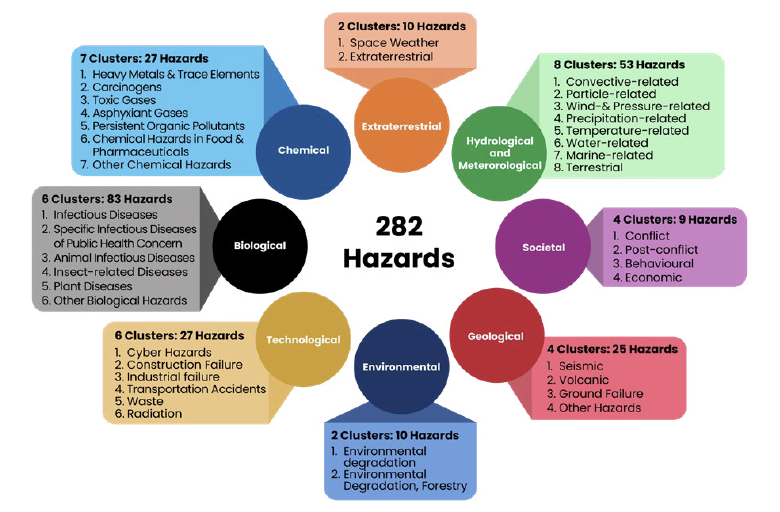

Riesgo por amenazas ambientales


Ambiental
2 grupos de peligros y 24 peligros específicos
| Peligro específico | Identificador | Grupo |
|---|---|---|
| incendios forestales | EN0205 | Degradación ambiental (silvicultura) |
| Pérdida/degradación de humedales | EN0304 | Degradación ambiental |
| Erosión del suelo | GH0403 | Degradación ambiental |
| Aumento del nivel del mar | EN0402 | Degradación ambiental |
| Minería de arena | EN0405 | Degradación ambiental |
| Intrusión de agua salada | EN0302 | Degradación ambiental |
| Salinidad y sodicidad | EN0303 | Degradación ambiental |
| Escorrentía / Contaminación de fuentes no puntuales | EN0106 | Degradación ambiental |
| Pérdida de permafrost | EN0305 | Degradación ambiental |
| Acidificación de los océanos | EN0401 | Degradación ambiental |
| Pérdida de manglares | EN0207 | Degradación ambiental |
| Degradación de la tierra | EN0301 | Degradación ambiental |
| Contaminación del aire en el hogar | EN0101 | Degradación ambiental |
| Especies invasoras del bosque | EN0204 | Degradación ambiental (silvicultura) |
| Perturbaciones forestales | EN0203 | Degradación ambiental |
| Declive y muerte regresiva de los bosques | EN0202 | Degradación ambiental |
| Eutrofización | EN0403 | Degradación ambiental |
| Desertificación | EN0206 | Degradación ambiental |
| Deforestación | EN0201 | Degradación ambiental (silvicultura) |
| Blanqueamiento de corales | EN0404 | Degradación ambiental |
| Carbono negro | EN0104 | Degradación ambiental |
| Pérdida de biodiversidad | EN0501 | Degradación ambiental |
| Contaminación del aire ambiental (exterior) | EN0103 | Degradación ambiental |
| Contaminación del aire (fuente puntual) | EN0102 | Degradación ambiental |
| Lluvia ácida | EN0105 | Degradación ambiental |